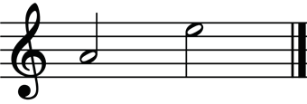
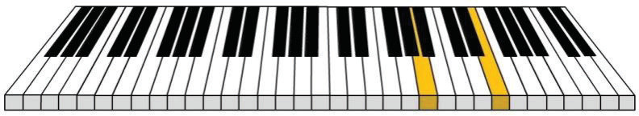

Chapter Three
Harmony
Introduction
Harmony plays an important role in shaping the mood and overall texture of a musical piece. In this chapter, you will learn several aspects related to harmony, including intervals and tonic triads. The competencies developed will enable you to identify and construct intervals and triads. It will also enhance your ability to recognise musical sounds by ear and apply the skill in music creation.
Musical intervals
In music theory, an interval is the distance between two pitches. For instance, on a piano, it can be the distance from note C to D, C to G, D to A or any others. Understanding intervals allows musicians to identify relationships between notes, compose music and analyse different compositions effectively. When finding the interval between two notes, we normally count from the lower note to the upper one. Figure 3.1 shows an interval between two notes from A to E on the staff and a piano keyboard.

